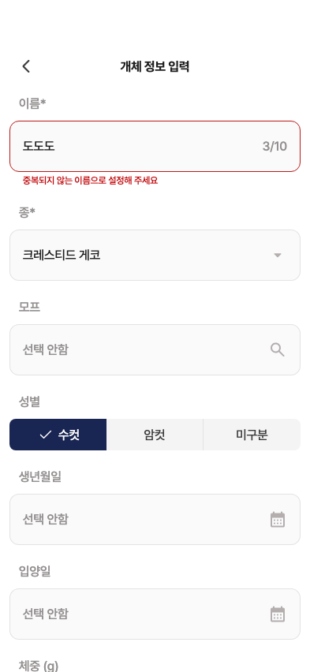
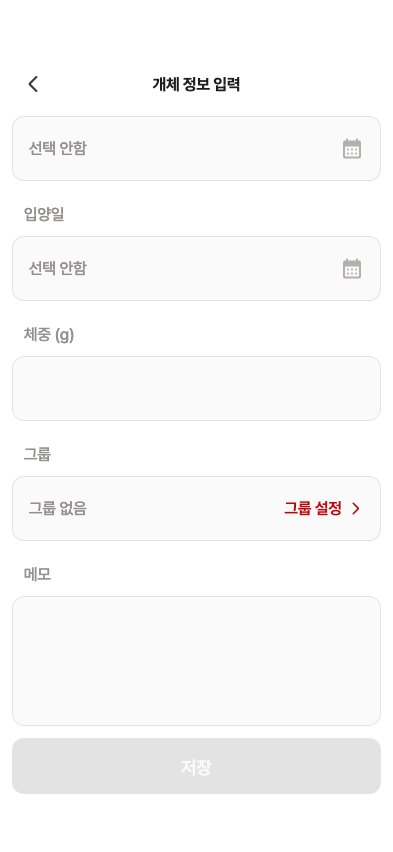

27 · 이름 중복 오류
26번 수정·검증 완료 후 다음 검수입니다. 아래는241 현재 화면입니다.
수정 제안
① 오류 문구를5pt 왼쪽·4pt 아래로 · 자간-.24
② 오류 다음 입력칸이4pt 위로 당겨지는 간격 보정
③ 저장 버튼을 원본처럼 콘텐츠 위에 고정하는 구조 검토
중복일 때 저장 비활성, 유효한 이름으로 바꾸면 다시 활성화되는 동작은 정상입니다.
Figma · 이름 중복 현재 제품 위젯 · 같은 스크롤 위치
현재 제품 위젯 · 같은 스크롤 위치
현재 앱의 저장 버튼 · 폼 끝까지 스크롤한 상태

원본은 버튼 뒤·아래로 입력칸이 보입니다.25번 긴 폼의 기존 스크롤 내부 버튼 구조도 함께 정리할 필요가 있습니다. 오류 때만 버튼 위치를 바꾸는 방식은 제안하지 않습니다.
별도 원본 · 필수값 누락 오류

현재 승인된 빈 폼 저장 비활성 정책에서는 저장을 눌러 이 상태로 진입하지 않습니다. 정책 변경은 아직 하지 않았습니다.
종·모프는 승인된 크레스티드 범위를 유지하며 실제 사용자 데이터는 사용하지 않았습니다.
상세 측정·수정 방향